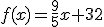
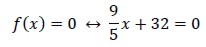
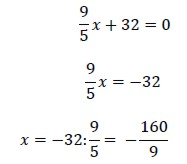
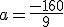
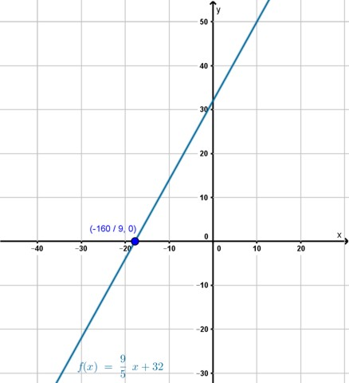
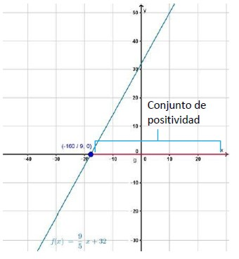
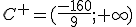
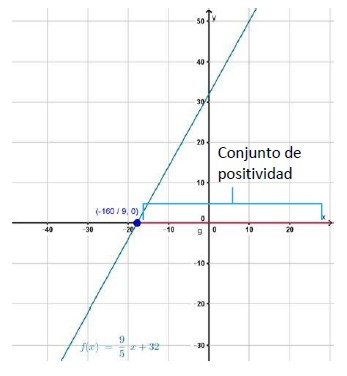
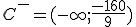

Ceros, conjunto de positividad y conjunto de negatividad
En algunos países del mundo, como en la Argentina, se utiliza la escala de grados centígrados para expresar temperaturas, mientras que en otros se utiliza la escala de grados Fahrenheit. La relación de conversión entre ambas escalas es lineal y está dada por la fórmula  , donde x es la temperatura expresada en grados centígrados y f(x) es la misma temperatura expresada en grados Fahrenheit.
- ¿Cuál es la temperatura en grados centígrados que equivale a 0 °F (se lee “cero grados Fahrenheit”)?
- ¿Para qué valores de la temperatura expresada en grados centígrados la temperatura equivalente en grados Fahrenheit es positiva?
- ¿Para qué valores de la temperatura expresada en grados centígrados la temperatura equivalente en grados Fahrenheit es negativa?
¿Cuál es la temperatura en grados centígrados que equivale a 0 °F?
Para responder a esta pregunta, podemos traducir el planteo del problema al lenguaje matemático, con el concepto de función, del siguiente modo:
Conociendo la función de conversión entre temperaturas debemos encontrar para qué valores de x la imagen es 0.
Para responder esto planteamos:

Si resolvemos esta ecuación obtenemos la respuesta:

Entonces: 0 grados Fahrenheit equivalen  grados centígrados.
Si representamos gráficamente esta respuesta obtenemos el siguiente gráfico.
La respuesta a nuestra pregunta coincide con el punto donde la recta corta al eje de las abscisas. Este punto particular recibe el nombre de cero de la función.

|
Los ceros o raíces de una función son aquellos valores del dominio de una función cuya imagen es cero. |
¿Para qué valores de la temperatura expresada en grados centígrados la temperatura equivalente en grados Fahrenheit es positiva?
Para poder dar respuesta a esta pregunta tenemos que encontrar para qué valores de x la imagen es positiva. Si observamos la gráfica, podemos ver que todos los puntos del dominio que se encuentran a la derecha del punto tienen imágenes positivas. Es decir que para todos los valores mayores a las imágenes serán positivas.
A este conjunto de valores lo llamamos conjunto de positividad

El conjunto de positividad (C+) de una función es el subconjunto del dominio cuyas imágenes son números positivos.
En nuestro problema: 
¿Para qué valores de la temperatura expresada en grados centígrados la temperatura equivalente en grados Fahrenheit es negativa?
En este caso debemos encontrar para qué valores de x la imagen es negativa. Si observamos la gráfica, podemos ver que todos los puntos del dominio que se encuentran a la izquierda del punto tienen imágenes negativas. Es decir que para todos los valores menores a las imágenes serán negativas.
A este conjunto de valores lo llamamos conjunto de negatividad.

El conjunto de negatividad (C-) de una función es el subconjunto del dominio cuyas imágenes son números negativos.
En nuestro problema: 
Obra publicada con Licencia Creative Commons Reconocimiento Compartir igual 4.0